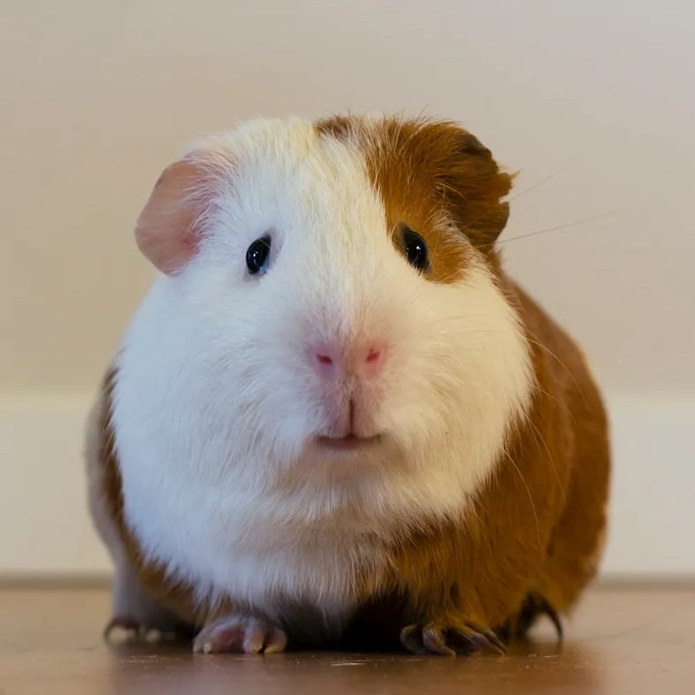

Nos patients témoignent 🐾
Je suis un chat paresseux… J’avais perdu toute énergie… Retrouvé grâce au vétérinaire.

Je suis un chien heureux… Chaque visite me garde en forme… Toujours joyeux et en santé.
Je suis un chat sauvé… Mes calculs urinaires étaient douloureux… Ils m’ont rendu la vie.
Moi, le chien paresseux… Je dormais tout le temps… J’ai retrouvé mon entrain.
Moi, le cochon d’Inde… Je ne mangeais plus bien… J’ai retrouvé l’appétit.

Je suis un lapin… Ma stérilisation s’est bien passée… Je suis plus calme et heureux.